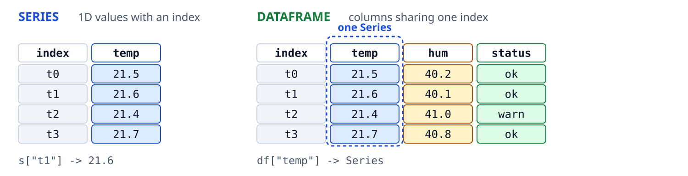
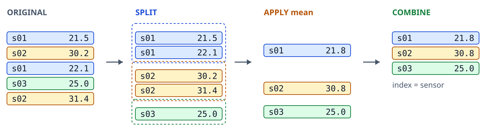
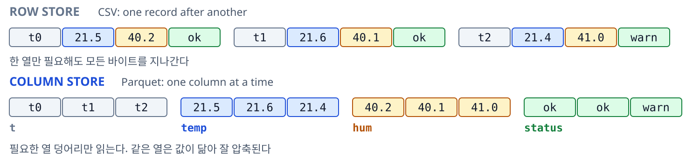

Pandas
데이터프레임 활용 및 전처리
충북대학교 지능로봇공학과 문성태 교수
본 교육은 K-뉴딜 아카데미 교육과정의 일환으로 진행된다
What is Pandas
NumPy 배열에 이름표를 붙여 표로 다루게 만든 라이브러리
Who
- Wes McKinney — 2008년 금융 데이터 분석 도구로 시작
- 공개 — 2009년 오픈소스로 시작 (panel data)
- 지금 — NumFOCUS 후원, BSD 3-Clause
Why
- 문제 — 배열에는 열 이름도 시각도 없음
- 해법 — 인덱스와 열 이름을 붙인 표 자료구조
- 기능 — 결측 처리, 시계열, 그룹 집계가 기본 기능
Where
- 입력 — CSV, Excel, SQL, Parquet 을 한 줄로 적재
- 연결 — scikit-learn, statsmodels, 시각화 도구의 공통 입력
- 현장 — 금융, 실험 데이터, 로그와 센서 분석
버전 — 1.0 은 2020년, 2.0 은 2023년. (본 강의는 2.x 기준)
왜 Pandas인가
NumPy 는 숫자 상자, Pandas 는 이름표가 붙은 표
- 열마다 다른 이름과 dtype
- 결측값(NaN)을 정식 지원
- 시간 인덱스, 문자열, 범주형 지원
- CSV, Excel, Parquet, SQL 직접 입출력
- 내부는 NumPy 배열, 속도를 그대로 계승
import pandas as pd df = pd.read_csv("log.csv") df.head() # t temp hum status # 0 0.0000 21.5 40.2 ok # 1 0.0100 21.6 40.1 ok
센서 로그, 실험 기록, 설문 응답처럼 행과 열에 의미가 있는 데이터가 대상
Series 와 DataFrame
라벨이 붙은 1차원이 Series, 같은 라벨을 공유하는 열의 묶음이 DataFrame

- Series — 값 배열 하나에 인덱스가 짝지어진 형태
- DataFrame — 인덱스를 공유하는 Series 들의 모음
- 열 선택 — df["temp"] 의 결과가 Series
- 정렬 기준 — 연산은 위치가 아니라 인덱스 기준
Series 기본
s = pd.Series([21.5, 21.6, 21.4], index=["a", "b", "c"]) s["b"] # 21.6 s.mean() # 21.5 s.index # Index(['a','b','c']) s.values # numpy 배열
- 1차원 배열 + 인덱스 라벨
- DataFrame 의 열 하나가 Series
- 인덱스 기준으로 자동 정렬 후 연산
- 이름으로 접근, 위치를 외울 필요 없음
DataFrame 기본
df = pd.DataFrame({
"t": [0.0, 0.1, 0.2],
"temp": [21.5, 21.6, 21.4],
"status": ["ok", "ok", "warn"],
})
df.columns # 열 이름
df.index # 행 라벨
df.shape # (3, 3)
- 2차원 표, 열 하나하나가 Series
- 열마다 다른 dtype 가능
- index는 기본적으로 0부터의 정수
- 시계열은 시간을 index 로 두는 편이 유리
데이터 불러오기
df = pd.read_csv(
"log.csv",
sep=",",
header=0,
parse_dates=["timestamp"],
dtype={"sensor_id": "category"},
na_values=["NA", "-999"],
)
센서 로그는 -999, NA, 빈 문자열 같은 값이 결측 표시로 쓰인다. 읽는 순간 처리하는 편이 안전.
대용량 읽기 옵션
pd.read_csv("big.csv", usecols=["t", "ax"]) # 필요한 열만 pd.read_csv("big.csv", nrows=1000) # 앞부분만 미리보기
reader = pd.read_csv(
"big.csv", chunksize=100_000)
for chunk in reader:
process(chunk)
# 나누어 처리하면 메모리가 안전
- 열을 줄이는 것이 가장 큰 절감
- 먼저 nrows 로 구조 확인
- chunksize 는 반복자를 반환
- 반복해 읽는다면 parquet 으로 전환
데이터 훑어보기
df.head() # 앞 5행 df.tail(3) # 마지막 3행 df.sample(5) # 무작위 5행 df.shape # (행, 열) df.info() # dtype, 결측, 메모리 df.describe() # 수치 요약 df.dtypes # 열별 타입
적재 직후 루틴
- shape 로 크기 확인
- info 로 dtype 과 결측 확인
- describe 로 값 범위 확인
describe에서 min 이 -999, max 가 99999 라면 결측 표시이거나 이상치.
열 선택과 추가
df["temp"] # Series df[["temp", "hum"]] # DataFrame df["temp_f"] = df["temp"] * 9 / 5 + 32 df = df.drop(columns=["unused"]) df = df.rename(columns={"temp": "temp_c"})
- 대괄호 하나는 Series, 둘은 DataFrame
- 열 생성은 바로 대입
- drop 과 rename 은 새 객체를 반환
- 열 이름은 소문자와 밑줄로 통일
df.columns = df.columns.str.strip().str.lower() # 열 이름 일괄 정리
행 선택: loc와 iloc
loc — 라벨 기준
df.loc[0] df.loc[0:2] # 0,1,2 끝 포함 df.loc[df["temp"] > 30, "temp"]
iloc — 위치 기준
df.iloc[0] df.iloc[0:2] # 0,1 끝 제외 df.iloc[0, 1] # 첫 행 둘째 열
loc 슬라이스는 끝을 포함, iloc 는 미포함. 파이썬 리스트와 달라 가장 자주 틀리는 지점.
시간을 인덱스로 두면 df.loc["2026-08-21"] 처럼 날짜 문자열로도 절단 가능.
조건 필터링
불리언 인덱싱
df[df["temp"] > 30] df[(df["temp"] > 30) & (df["hum"] < 50)] df[df["status"].isin(["ok", "warn"])] df[df["temp"].between(10, 40)]
NumPy 와 동일 — and / or 대신 & | 와 괄호.
query로 읽기 쉽게
df.query("temp > 30 and hum < 50") limit = 30 df.query("temp > @limit")
조건이 길어지면 query 가 읽기 좋음. 파이썬 변수는 @이름으로 전달.
연습문제 1
df 에서 temp >= 30 이면서 hum < 40 인 행만 골라 몇 행인지 구하시오.
df.head()
df.shape
# IMPLEMENT HERE
df 의 열 — t 유닉스 시각(초), timestamp, day, sensor_id, id, temp 온도, hum 습도, status
· 기대 출력 — 58 (총 602행 중)
SettingWithCopyWarning
사본에 대입하면 원본은 그대로. 경고는 그 사실을 알리는 신호
연쇄 인덱싱
sub = df[df["temp"] > 30] sub["temp"] = 0 # 경고 df["temp"].max() # 원본은 그대로
loc 로 한 번에
df.loc[df["temp"] > 30, "temp"] = 0 df["temp"].max() # 반영됨
- df[조건] 이 뷰인지 사본인지 pandas 도 보장하지 못함
- 연쇄 인덱싱은 두 단계. 첫 단계가 사본이면 둘째 단계의 대입은 폐기
- loc 로 행과 열을 한 번에 지정하면 원본을 직접 수정. 사본이 필요하면 .copy()
결측값 탐지
df.isna().sum() # 열별 결측 개수 df.isna().mean() # 열별 결측 비율 df.isna().any(axis=1).sum() # 결측을 하나라도 포함한 행 수
- isna 와 isnull 은 같은 함수
- 결측 비율을 먼저 확인. 1% 와 60% 는 대응이 다름
- 열별로 볼지 행별로 볼지 구분
- 결측이 몰린 구간이 있는지 시간축으로 확인
df[df.isna().any(axis=1)].head() # 결측이 있는 행을 직접 들여다본다
결측값 처리 전략
df.dropna() df.dropna(subset=["temp"]) df.dropna(axis=1, thresh=100) df["temp"].fillna(0) df["temp"].ffill() df["temp"].bfill() df["temp"].interpolate()
방향 — ffill 은 마지막 관측을 이후로 전파, bfill 은 다음 관측을 이전으로 소급. 맨 앞 결측은 ffill 로, 맨 뒤 결측은 bfill 로 채울 수 없음
기본 전략 — 센서 시계열은 보간, 상태 플래그는 ffill, 범주형은 미상 범주 추가
연습문제 2
df 의 temp 열에 결측이 있다. (1) 결측 개수를 세고, (2) 앞 값과 뒤 값으로 채운 뒤, (3) 남은 결측이 0 인지 확인하시오.
df["temp"].head(12) # IMPLEMENT HERE
기대 출력 — 채우기 전 결측 8 개, 채운 뒤 0 개
· 주의 — 맨 앞이 결측이면 앞 값이 없다. ffill 다음에 bfill 까지 해야 0 이 된다
중복 처리
df.duplicated().sum() # 완전히 같은 행의 개수 df = df.drop_duplicates() df = df.drop_duplicates( subset=["t"], keep="last") # 같은 시각은 마지막 값만 남긴다
- subset 으로 중복 판단 기준 열을 지정
- keep은 first, last, False 중 선택
- keep=False 는 중복 행을 전부 제거
- 로그 병합 후에는 중복 확인 필수
센서 로그에서 같은 타임스탬프가 두 번 나오면 재전송이거나 버퍼 중복. 지우기 전에 원인 확인.
자료형 정리
raw = pd.Series(["21.5", "21.6", "n/a", "-999"]) num = pd.to_numeric(raw, errors="coerce") print(num.tolist()) try: pd.to_numeric(raw, errors="raise") except ValueError as err: print("raise:", err)
- errors="raise" — 기본값. 숫자로 못 바꾸는 값이 하나라도 있으면 예외
- errors="coerce" — 실패한 값만 NaN 으로 바꾸고 나머지는 진행
- 주의 — 센티널 -999 는 숫자라 통과. 범위 검사로 따로 처리
s = df["status"] c = s.astype("category") use = df.memory_usage(deep=True).sum() print("object ", s.memory_usage(deep=True)) print("category", c.memory_usage(deep=True)) print("total MB", round(use / 1e6, 2))
- memory_usage — 열별 바이트 사용량. sum() 으로 전체 합산
- deep=True — 문자열 내용까지 계산. 기본값은 포인터만 세어 과소 집계
- category — 반복 문자열을 코드 + 사전으로 저장. 종류가 적을수록 절감 폭이 큼
문자열 처리 (.str)
s = df["status"] s.str.strip() s.str.lower() s.str.contains("err") s.str.startswith("warn") s.str.replace("_", "-", regex=False) s.str.len()
df["code"] = ( df["tag"].str.split("-").str[0]) df["num"] = ( df["raw"].str.extract(r"(\d+)"))
.str 접근자로 파이썬 문자열 메서드를 열 전체에 한 번에 적용. 결측은 자동으로 건너뜀
센서 로그의 앞뒤 공백과 대소문자 혼재가 가장 흔한 오염. 적재 직후 strip 과 lower 로 통일
날짜 시간 처리
df["t"] = pd.to_datetime(df["t"]) df["t"].dt.year df["t"].dt.hour df["t"].dt.dayofweek df["t"].dt.floor("1min") df = df.set_index("t").sort_index() df.loc["2026-08-21"]
- 문자열을 datetime64로 바꿔야 시간 기능 사용 가능
- .dt 접근자로 연, 월, 시, 요일 추출
- 시간을 index 로 두면 구간 자르기가 쉬움
- 리샘플링은 반드시 정렬 후에
df["t"] = pd.to_datetime(df["t"], unit="s", utc=True) # 유닉스 시각 입력
연습문제 3
t 는 유닉스 시각(초)이다. 이를 datetime 인덱스로 바꾼 뒤, 하루 중 시(0~23시)별 평균 온도를 구하시오.
df[["t", "temp"]].head()
# IMPLEMENT HERE
데이터 — 2026-08-21 부터 7분 간격 600개, 약 3일치 · 기대 출력 — 인덱스가 0 부터 23 인 값 24개짜리 Series. 원자료에 센티널 -999 가 한 개 남아 있어 3시 평균만 음수로 나온다
정렬과 순위
정렬은 새 객체를 반환, 순위는 동점 처리 규칙이 핵심
top = df.sort_values(["day", "temp"], ascending=[True, False]) print(top[["day", "temp"]].head(3).to_string()) t = pd.Series([21.5, 21.6, 21.5]) for m in ("average", "min", "dense"): print(m, t.rank(method=m).tolist())
| 값 | average | min | dense |
|---|---|---|---|
| 21.5 | 1.5 | 1 | 1 |
| 21.6 | 3 | 3 | 2 |
| 21.5 | 1.5 | 1 | 1 |
- sort_values — by, ascending 을 리스트로 주면 열마다 방향 지정
- na_position — 결측 위치 선택. 기본은 last
- rank(method) — average 나눔, min 낮은 순위, dense 연속
- nlargest(n) — 상위 n 개만 추출. 인덱스는 원본 유지
apply와 map
s = df["status"].map({"ok": 0, "warn": 1}) print(s.head(4).tolist(), int(s.isna().sum())) r = df.apply(lambda x: x["a"] + x["b"], axis=1) print(r.head(3).tolist()) m = df[["a", "b"]].apply(lambda c: c.max()) print(m.to_dict())
| 호출 | 전달 단위 | 반환 |
|---|---|---|
| s.map(dict) | 원소 하나 | Series |
| df.apply(f, axis=1) | 행 Series | Series |
| df.map(f) | 원소 하나 | DataFrame |
map 은 Series 전용, apply 는 축 단위, df.map 은 전 원소 단위
- map — 함수, dict, Series 를 인자로 받음. 대응 키가 없으면 NaN
- apply — axis=0 은 열 Series, axis=1 은 행 Series 를 함수에 전달
- DataFrame.map — 전 원소에 적용. pandas 2.1 이전 이름은 applymap
- 성능 — apply 는 파이썬 루프. 벡터 연산, 내장 메서드, map, apply 순으로 검토
groupby 개념
나누고(split), 각각 계산하고(apply), 다시 합친다(combine).

df.groupby("sensor_id")["temp"].mean() # 센서별 평균 온도 df.groupby(["day", "sensor_id"]).size() # 날짜별 센서별 샘플 수
groupby 집계
summary = df.groupby("sensor_id").agg( temp_mean=("temp", "mean"), temp_max=("temp", "max"), temp_std=("temp", "std"), n=("temp", "size"), ).reset_index()
- 이름 붙은 집계로 결과 열 이름을 직접 지정
- 문자열 대신 함수 전달 가능
- reset_index 로 그룹 키를 다시 열로 환원
- size 는 결측 포함, count 는 결측 제외
연습문제 4
sensor_id 로 묶어 센서별 평균 온도와 표본 수를 한 표로 구하고, 평균이 가장 높은 센서의 이름을 찾으시오.
df[["sensor_id", "temp"]].head()
# IMPLEMENT HERE
센서 — s01, s02, s03 세 종류
· 기대 출력 — 평균과 개수 두 열을 가진 표, 그리고 가장 높은 센서 s01 (평균 27.48, 188개)
transform과 filter
그룹 연산의 세 갈래 — agg, transform, filter
transform — 행 수 유지
g = df.groupby("sensor_id")["temp"] z = (df["temp"] - g.transform("mean")) z = z / g.transform("std") print(z.head(3).round(2).tolist())
그룹 평균과 표준편차를 각 행에 되돌려 센서별 z 점수 계산
filter — 그룹 통째 선별
sz = df["sensor_id"].value_counts() big = df.groupby("sensor_id").filter( lambda d: len(d) >= 200) print(sz.to_dict(), len(df), len(big))
- 인자는 그룹 DataFrame 전체
- 반환은 True 또는 False 하나
- 행 수는 줄고 원본 인덱스는 유지
피벻과 재구조화
pd.pivot_table(df,
index="day",
columns="sensor_id",
values="temp",
aggfunc="mean")
# wide: 행=날짜, 열=센서
df.melt(
id_vars=["t"],
var_name="channel",
value_name="value")
# long: t, channel, value
wide 형식
사람이 보기 좋고 보고서에 바로 사용. 대신 열이 계속 증가
long 형식
그룹 연산과 시각화에 유리. 채널이 늘어도 구조 유지
데이터 결합
pd.concat([df1, df2], axis=0) # 같은 구조를 아래로 이어붙인다 pd.concat([df1, df2], axis=1) # 인덱스를 맞춰 옆으로 붙인다 df.merge(meta, on="sensor_id", how="left")
결합 전에 키 중복 여부를 확인 필수. 중복 키는 행 수를 폭증. validate="m:1"로 자동 검사 가능
시계열 리샘플링
df = df.set_index("t").sort_index() df["temp"].resample("1min").mean() # 다운샘플링: 줄여서 집계 df["temp"].resample("1s").interpolate() # 업샘플링: 늘려서 보간 df["temp"].resample("1h").agg( ["mean", "max", "count"])
- 시간 인덱스가 있어야 사용 가능
- 규칙 문자: s, min, h, D, W, M
- 불규칙한 샘플링을 균일한 계열로 바꾸는 도구
- count 를 함께 보면 빈 구간 발견 가능
롤링 윈도우
df["ma"] = df["temp"].rolling( 5, min_periods=1).mean() # 5샘플 이동평균 df["sd"] = df["temp"].rolling(30).std() # 이동 표준편차, 이상 감지용 df["ewm"] = df["temp"].ewm(span=10).mean() # 지수 가중 이동평균
- 창 크기는 샘플링 주파수 기준으로 결정
- 100Hz에서 1초 평균이면 창 크기는 100
- min_periods 를 빼면 앞부분이 전부 NaN
- 이동평균은 단순하지만 가장 자주 쓰는 필터
이동평균은 지연을 만든다는 점에 주의. 실시간 제어에 쓸 때는 지연량을 계산해 보상
연습문제 5
시간 인덱스를 가진 df 에서 temp 의 1시간 평균 리샘플링 값과 5샘플 이동평균 값을 각각 구해 앞 5개를 비교하시오.
df.index[:3] df["temp"].head() # IMPLEMENT HERE
데이터 간격 — 7분. 리샘플링 주기는 이보다 커야 의미가 있다 (1분으로 하면 대부분 결측이 된다) · 기대 출력 — 리샘플링은 600행이 70행으로 줄고 인덱스가 정각으로 바뀐다. 이동평균은 행 수 그대로, 앞 4개는 창이 덜 차서 결측
결과 저장
df.to_csv("clean.csv", index=False) df.to_parquet("clean.parquet") df.to_excel("report.xlsx", index=False) df.to_json("clean.json", orient="records")
index=False를 잊지 않는다
# index=True (기본값) ,t,temp 0,0.0,21.5 # 이름 없는 열이 생긴다
다시 읽을 때 Unnamed: 0 열이 생기는 원인
고르는 기준 — 사람이 열어볼 산출물은 CSV나 Excel, 중간 결과와 대용량은 parquet. 이유는 다음 두 장
CSV 와 Parquet
행으로 쌓는 CSV, 열로 묶는 Parquet

- CSV — 한 줄이 한 행. 열 하나만 필요해도 전부 스캔
- Parquet — 열 덩어리로 저장. 쓰는 열만 적재
- 압축 — 같은 열은 값이 닮아 압축률이 높음
- 타입 — 스키마를 파일에 함께 저장
Parquet 다루기
df.to_parquet("clean.parquet") df.to_parquet("c.parquet", compression="zstd") pd.read_parquet("clean.parquet") pd.read_parquet("clean.parquet", columns=["t", "temp"])
| 형식 | 크기 | 읽기 (전체 / 두 열) | 타입 |
|---|---|---|---|
| CSV | 5.4 MB | 36 ms / 36 ms | 유실 |
| Parquet | 3.2 MB | 25 ms / 3 ms | 보존 |
| Parquet, float32 | 2.2 MB | - | 보존 |
6만 행 10열 로그 기준. 열이 많고 행이 길수록 격차 확대
이럴 때 쓴다
- 중간 결과 — 정제 단계 사이에 주고받는 파일
- 대용량 — 열 일부만 반복해서 읽는 분석
비용
- 이진 형식 — 편집기로 열 수 없고 diff 도 불가
- 엔진 필요 — pip install pyarrow
빠른 시각화
df["temp"].plot() # 선 그래프 df["temp"].hist(bins=30) # 분포 확인 df.plot(x="t", y=["ax", "ay", "az"]) # 다중 선 그래프 df.plot.scatter(x="temp", y="hum")
- 내부적으로 matplotlib 사용
- 탐색 단계에서 빠르게 한번 보는 용도
- 보고서용 그림은 matplotlib 직접 사용
- 이상치는 숫자보다 그림에서 먼저 보임
전처리를 끝냈다면 한 번 그려 볼 것. 통계값이 멀쩡해도 그림에서 문제가 드러남
실습 안내 (lab04)
- 로그 CSV 적재와 품질 확인
- 열 이름, 자료형, 시간 인덱스 정리
- 결측과 중복 처리
- 센서별 groupby 통계표 만들기
- 1분 단위 리샘플링과 이동평균
- 정제 결과 저장
체크포인트
- 체인 인덱싱 경고 없이 돌아가는가
- 결측 처리 방식을 설명할 수 있는가
- 저장 후 다시 읽어도 같은 형태인가
다음: Part 2-4 센서 데이터 로그 분석 종합 실습 — NumPy 와 Pandas 를 한 파이프라인으로 결합